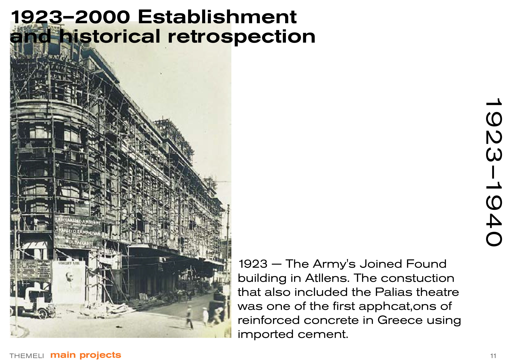
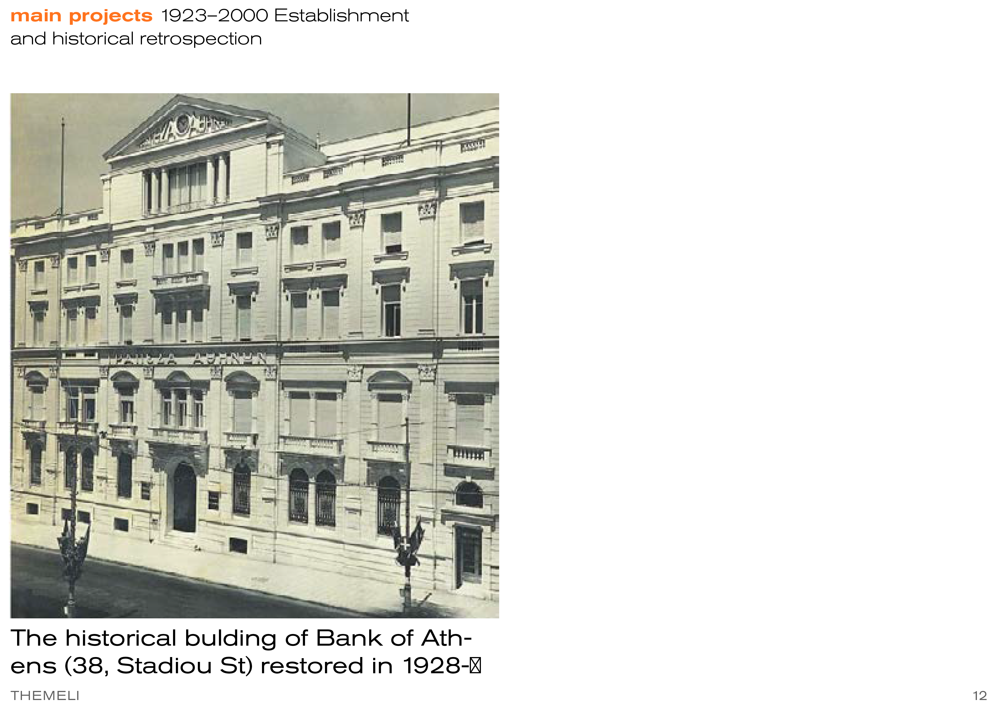
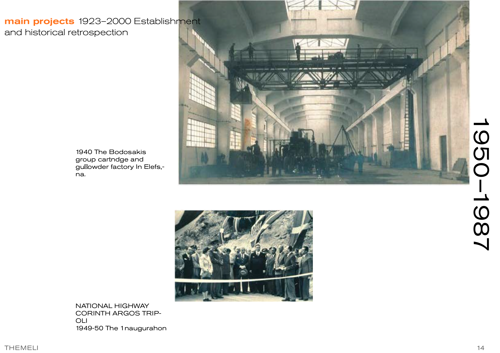
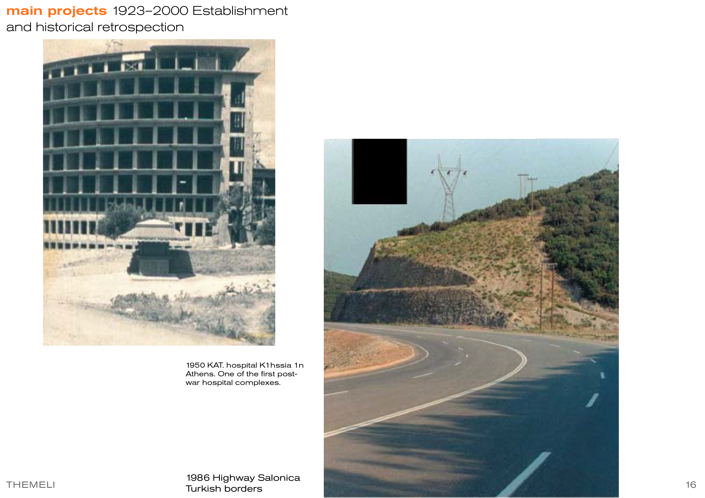

Timeline
In 1986 the sole proprietorship enterprise of Dimitrios Dinopoulos takes the legal form of Societe Anonyme and acquires its current name. A century of building Greece's foundations.
The Army's Joined Found building in Athens. The construction that also included the Palias theatre was one of the first applications of reinforced concrete in Greece using imported cement.

The historical building of Bank of Athens (38, Stadiou St) restored in 1928.

With the declaration of WWII a period of inaction follows, during which Greece goes through the hardships of the war and later the civil war.
On January 1950 the Periclis Triantafillidis company acquires by decision of the Ministry of Coordination the special class E' contractor's degree for participating at tenders for reconstruction projects and thus presents itself, for the first time after the war with the construction of two main national roads axis's CORINTH ARGOS TRIPOLI and ARGOS NAFPLIO — realized within the frame of the Marshall Aid Plan.
The buy-out of Gemme SA, a drilling and mining unit, affiliated company of ETVA, brings in the expansion of the company's knowledge and experience in deep drilling, exploiting mineral reserves, research and geotechnical drillings.
The Hellenic Technical Works company merges with Themeli SA, a high-class certificate company, successfully active in the construction market since 1971. The expanded Themeli SA moves in its privately owned office building of 3.000 sqm, in Kapodistriou Av, the company's present headquarters.
The company constructs large public infrastructure works, water and sewerage systems (Naflpio, Kos island), river and streambed arrangements (Kifissos, Podoniftis), bridges (Aliakmona, Enipea), tunnels, and more.
The construction of wide scale underground military installations follow and one section of the main motorway between Thessaloniki and the border with Turkey, which later is known as the EGNATIA ODOS.
Except the above projects many other significant ones have been constructed: the Hellenic Aspropyrgos refinery, hotels, hospitals, education and University campuses, industrial buildings, athletic centers, office buildings.


The new Athens-Thessaloniki dual railway line commences. Themeli S.A. constructs, for the new line, prestressed bridges of considerable length above the Aliakmonas river, at Eginio, Pieria prefecture and the Enipeas river, at Orfana, Karditsa prefecture, which are financed by the European Community.
1993 AIGINIO, Pieria: Aliakmon river bridge, 850m long.
1994 ORFANA, Karditsa: Tunnel and Enipeas river bridge, 350m long.
1998 ISTHMOS CORINTH: Elefsina–Corinth high speed railway underpass.
1999 AGRINIO: Construction of dams and ditches for flood protection.
1998–99 Larissa bypass highway — Gyrtoni interchange.
1998 MITILINI, Lesvos: Construction of sewerage network.
The country's rail network is modernized with the improvement and upgrade of the existing Athens-Salonica dual railway line in order to increase train speed to 160 km/h and after the replacement of rail material to 200 km/h.
INOI, VIOTIA — Track laying between the railway stations of Inoi (km 72+000) and Tithorea (km 165+000). The project, of a total length of 93 km, included major technical works.
The construction of a SLAB TRACK section at the Tempi area is a project for which special know-how was needed, because the SLAB TRACK system consists a new development for the construction of railroad line networks, applied in Greece for the first time.
Modern tram at the major area of Athens. The project commenced from the centre of Athens towards the Palaia Faliro area and is expanded today, with new contracts, at the regions of Glifada and Voula.
PIREAUS IKONIO port, Perama — Construction of a tunnel of approximately 3.5km length for the connection of sea routes with the rail network.
2005 PARAVOLA, Agrinio — Underground watering network, ~30km length.
2005 KALAMOTI, Chios — Clay core earth dam, ~500m length.
MESTA, Chios — Port modernisation, new breakwater ~600m length.
2009 AIGIO, Achaia — Double railway tunnel, 3.252m underground, three escape tunnels.
The outbreak of financial crisis in Greece had direct impact on the activities of construction companies. Despite the crisis, the company maintains its integrity and continues operations without reductions in personnel out of respect to its employees and managers.
In October 2012, an extremely important project is completed: the 17 MW first wind park of THEMELI in Xirovouni of Nafpaktia (average altitude 1,500 m) Western Greece, starts operation.
Road construction within the park for a total length 3.5 km. Twenty wind generators GAMESA G52/850kW with 52 m impeller diameter and 44m base height. Two 20 kV independent lines for the transportation of generated power to the transfer station.
2013 — Extension of the existing tramway towards Pireaus. Construction of the road "Northern Axis of Crete" (VOAK) from Gournes to Hersonisos.